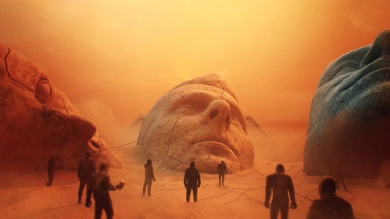

Will of the People

Nueva sudadera con estampado de oso por la parte detras para combinar con tus mejores pantalones
Sudadera edición hysteria a llegado al Republic Records ideal para el invierno
Si lo que tu quieres es demostrar que eres el más fan compra ya la nueva sudadera "Rostros" solo en RR.
Compra ya El nuevo disco edicion RR de Republic Records en este encontraras canciones que no encontraras en otro lugar ademas de traer una poster edicion especial compralo ya en RR.
Sudadera edición especial del disco Umprising solo 100 unidades a la venta
Compra la nueva playera edición Black Holes de RR
La nueva playera Retro de Muse te hara sentir de los 80s con este diseño tan bonito.
Con un diseño estupendo esta payera te ofrece tener estilo y comodidad al mismo tiempo
Sencillo pero bonito esta playera con el logo de la banda es todo lo que puedes pedir.
Muse es una banda de rock británica formada en 1994, en Teignmouth (Devon). Desde su formación, sus integrantes son: Matt Bellamy (voz, guitarra, piano, teclados), Christopher Wolstenholme (bajo, coros) y Dominic Howard (batería).12 Tras el lanzamiento de Black Holes and Revelations, Morgan Nicholls comenzó a colaborar con la banda durante las presentaciones en vivo, haciéndose cargo de teclados, samples, de algunos coros, rara vez del bajo y últimamente de la segunda guitarra.34 La banda es conocida por sus extravagantes espectáculos en vivo, por fusionar géneros musicales como el rock alternativo, rock espacial, rock progresivo, rock sinfónico y electrónica,5 además por los atípicos intereses de Bellamy en la conspiración global, la revolución, la astrofísica, vida extraterrestre, los fantasmas, la teología y el apocalipsis; temas que se ven reflejados en sus letras.2